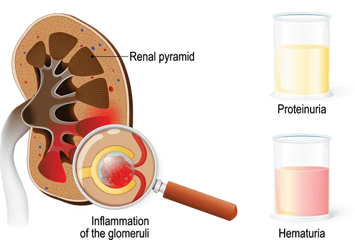
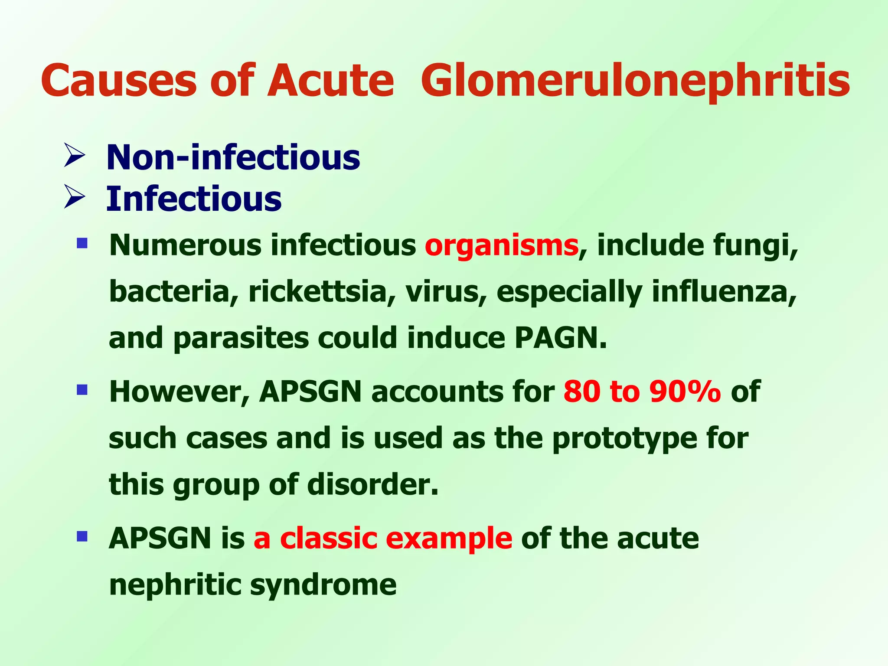
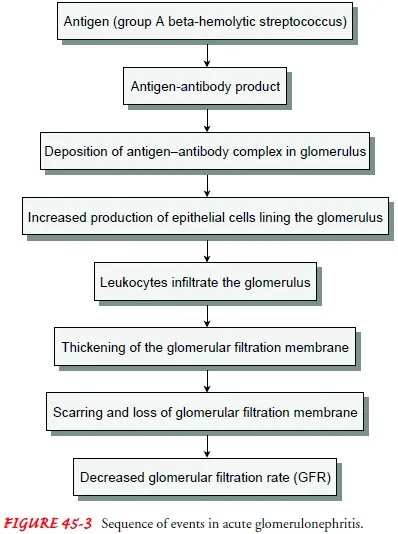
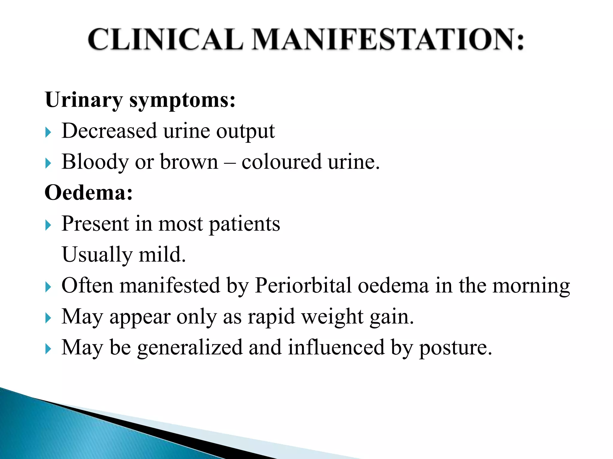
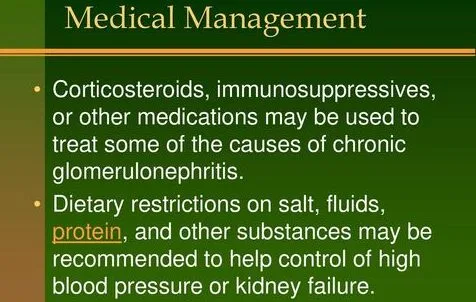

Expanded Nursing Uganda Explanation
Acute conversional dissociative disorders should be reviewed through safe maternal and newborn assessment, early recognition of danger signs, respectful communication and timely referral. Connect the definition to vital signs, bleeding, fetal or newborn wellbeing, patient education and local protocol requirements.
Contents, 15 sections (tap to expand)
01 Psychiatric disorders related to maternal child health
Psychiatric disorders that can affect mothers include:
- Depression : A common disorder that can occur during pregnancy and the postpartum period
- Anxiety : A common disorder that can occur during pregnancy and the postpartum period
- Postpartum psychosis(Puerperal or postnatal psychosis) : A disorder that usually manifests as bipolar disorder
- Post-traumatic stress disorder :
- Schizophrenia : A disorder that can be increased by maternal viral infection
These disorders are often referred to as maternal mental health (MMH) disorders or perinatal mental illness .
They can have negative effects on both the mother and the child, including:
- Adverse birth outcomes,
- Impaired mother-infant attachment,
- Breastfeeding difficulties,
- Infant care difficulties, and
- Increased risk of neuropsychiatric disorders in later life.
Risk factors for MMH disorders include:
- Poverty
- Migration
- Extreme stress
- Exposure to violence
- Emergency and conflict situations
- Natural disasters
- Low social support
02 A. Puerperal Blues (Postpartum “Baby Blues”) :
A transient mood disorder characterized by emotional lability, tearfulness, anxiety, irritability, and insomnia . It usually begins 2-3 days postpartum and resolves within 2 weeks.
Postpartum blues, also known as baby blues and maternity blues, is a very common but self-limited condition that begins shortly after childbirth and can present with a variety of symptoms such as mood swings, irritability, and tearfulness .
- Prevalence : Affects approximately 50% of postpartum women.
- Causes : The exact etiology is unknown, but likely involves hormonal shifts (particularly a drop in estrogen and progesterone), sleep deprivation, and the psychological stress of adjusting to motherhood. Altered neurotransmitter function (implied by lowered tryptophan levels) is suspected.
- Predisposing Factors : While relatively common, pre-existing anxiety or mood disorders may increase the intensity and duration.
- Antepartum / Intrapartum Predisposing Factors : Difficult labor, unplanned pregnancy, and lack of social support can exacerbate the symptoms.
- Assessment : Diagnosis is primarily clinical, based on the presence of characteristic symptoms. No specific investigations are usually required.
03 B. Postpartum Depression (PPD) :
A more severe and persistent mood disorder characterized by depressed mood, loss of interest or pleasure, fatigue, changes in appetite and sleep, feelings of worthlessness or guilt, difficulty concentrating, and recurrent thoughts of death or suicide . Symptoms typically emerge more gradually over the first 4-6 months postpartum, but onset can be earlier.
- Prevalence : Affects 10-20% of postpartum women.
- Causes : A complex interplay of hormonal changes (hypothalamic-pituitary-adrenal axis dysregulation), genetic predisposition, stressful life events, and lack of social support.
- Predisposing Factors : History of depression or anxiety, family history of mood disorders, stressful life events, lack of social support, young maternal age, and difficult pregnancy or delivery.
- Antepartum/Intrapartum Predisposing Factors : Cesarean delivery, difficult labor, neonatal complications, and unmet expectations about motherhood contribute to risk.
- Assessment : Diagnosis is clinical, based on the DSM-5 criteria for major depressive disorder. Investigations are typically not necessary unless other medical conditions are suspected.
04 C. Postpartum Psychosis :
A rare but serious condition characterized by the sudden onset of psychotic symptoms such as hallucinations, delusions, disorganized thinking, and mood disturbances (mania or depression) . It can include significant risk of self-harm or harm to the infant.
- Prevalence : Affects 0.14-0.26% of postpartum women.
- Causes : Likely involves a combination of hormonal changes, genetic predisposition (strong family history of psychosis), and possibly peripartum infections (Although direct microbial involvement is not definitive).
- Predisposing Factors: Pre-existing psychotic disorder (e.g., schizophrenia, bipolar disorder), family history of psychosis, and history of postpartum psychosis.
- Antepartum/Intrapartum Predisposing Factors: Pregnancy-related stress can exacerbate existing vulnerabilities.
- Assessment : Diagnosis is clinical, based on the presence of psychotic symptoms. Investigations may include blood tests to rule out other medical conditions.
- Microbes : While not directly causative, infections during pregnancy may contribute to the risk in some individuals by altering immune responses and interacting with hormonal changes, though this is not consistently established.
Management :
Aims of Management:
- To alleviate symptoms and improve the mother’s psychological well-being.
- To ensure the safety of the mother and infant.
- To promote bonding and attachment between mother and infant.
- To provide support and education to the family.
Maternity Centre (Initial Management):
- Puerperal Blues : Reassurance, emotional support, and education about the transient nature of the condition. Encourage adequate rest, healthy diet, and social support.
- PPD : Assess symptom severity and provide appropriate psychological interventions (psychotherapy, support groups). Consider referral to a psychiatrist or mental health professional for pharmacotherapy (e.g., SSRIs like fluoxetine or paroxetine) if symptoms are severe or do not improve.
- Postpartum Psychosi s: Immediate referral to a psychiatrist and hospitalization are crucial.
Referral :
Referral to a psychiatrist or mental health professional is indicated for:
- PPD with severe or persistent symptoms.
- Postpartum psychosis.
- Suicidal or infanticidal ideation.
- Any concerns about the mother’s or infant’s safety.
Hospital Management:
- Postpartum Psychosis : Hospitalization for stabilization, medication management (e.g., antipsychotics like chlorpromazine, possibly estradiol or other medications), and close monitoring. ECT may be considered in refractory cases. Lithium may be used for manic episodes, but breastfeeding would be contraindicated. Temporary separation of mother and infant may be necessary for safety.
- Severe PPD : Hospitalization may be required for stabilization, medication management, and close observation.
Nursing Care:
- Monitor vital signs, mood, and behavior.
- Provide emotional support and education.
- Administer medications as prescribed.
- Facilitate bonding and attachment between mother and infant.
- Educate the family about the condition and its management.
- Assess for risk of self-harm or harm to the infant.
Complications:
- Untreated PPD : Can lead to chronic depression, relationship problems, impaired parenting, and increased risk of suicide.
- Postpartum Psychosis : Can result in significant functional impairment, long-term mental health problems, and potentially harm to the mother or infant.
05 Postpartum Psychosis
Postpartum psychosis is a s evere mental illness affecting women after childbirth or abortion .
It’s a psychiatric emergency requiring immediate intervention. While it can emerge anytime within the first three months postpartum, the most common onset is within the first two to three weeks, sometimes as early as 3-10 days after delivery or within several weeks.
Epidemiology :
- Incidence : Affects a small percentage of women, estimated at less than 1-2 per 1000 deliveries. This means that for every 1000 women who give birth, fewer than 2 will experience postpartum psychosis.
- Risk Factors : While relatively rare, certain factors increase the risk. Being a first-time mother (primiparous) increases the likelihood compared to mothers who have delivered previously (multiparous).
- Onset and Prognosis : The onset is abrupt and dramatic, often progressing rapidly. Fortunately, with appropriate and timely treatment, most women make a full recovery.
Etiology (Causes):
The exact cause remains unclear , but a combination of factors likely contributes:
1. Genetic Predisposition : A family history of mood disorders (such as bipolar disorder or schizophrenia) significantly increases the risk. Specific genetic links, such as those involving chromosome 16, are being investigated.
2. Hormonal Fluctuations : The dramatic hormonal shifts following childbirth, the sharp decrease in estrogen and progesterone levels, are thought to play a big role. These hormonal changes can affect neurotransmitter levels in the brain, potentially triggering psychotic symptoms.
3. Family/Personal History : Of depressive episodes or mental illness.
4. Psychological and Social Factors : Stressful life events, lack of social support, relationship difficulties, history of depression or anxiety, unwanted pregnancy, and difficulties with infant care are strong risk factors. These stressors can exacerbate underlying vulnerabilities. Low self-esteem related to body image or perceived maternal inadequacy can also contribute.
- Lack of support
- Death of a loved one
- Low self-esteem (related to postpartum appearance or feeling inadequate as a mother)
- Financial problems
- Major life changes (moving, new job)
- Poor marital relationship
- Single parenthood
- Childcare stress
- Prenatal anxiety
- Low socioeconomic status
- Prenatal depression
- Unplanned/unwanted pregnancy
- Infant temperament problems
- Substance abuse
5. Organic Factors (Physical Illnesses) : In some cases, postpartum psychosis may be triggered or exacerbated by underlying medical conditions, such as:
- Neurological Events : Stroke (ischemic or hemorrhagic) affecting brain regions regulating mood and cognition.
- Electrolyte Imbalances : Severe disturbances in sodium, potassium, or other electrolytes can disrupt brain function, leading to psychotic symptoms.
- Metabolic Issues : Hypo/hyperglycemia (low/high blood sugar) or thyroid abnormalities (hypo/hyperthyroidism) can impact brain chemistry.
- Nutritional Deficiencies: Deficiencies in B vitamins (B12, folate, thiamine) can affect neurotransmitter production.
- Infections : Severe infections (sepsis) can trigger a wide range of psychiatric symptoms.
- Medication Side Effects : Certain medications can have psychiatric side effects.
06 Signs and Symptoms:
Symptoms vary but generally involve a mix of psychotic and mood-related features:
1. Psychotic Symptoms: These involve a break from reality:
- Hallucinations : Experiencing things that aren’t real, most commonly auditory (hearing voices, often commanding harmful actions towards the baby).
- Delusions : Fixed, false beliefs, such as believing the baby is evil or has special powers.
- Disorganized Thinking : Difficulty with coherent thought processes, leading to confused and illogical speech.
2. Mood Symptoms: These reflect extreme emotional disturbances:
- Rapid Mood Swings: Switching abruptly between euphoria (intense happiness) and depression.
- Severe Anxiety and Agitation: Intense fear, restlessness, and difficulty relaxing.
- Insomnia : Difficulty sleeping, sometimes to the point of complete sleep deprivation.
- Irritability : Easily angered or frustrated.
- Depression : Overwhelming sadness, hopelessness, and loss of interest in activities.
- Guilt and Self-Blame : Excessive feelings of guilt and inadequacy related to their role as a mother.
- Depersonalization/Derealization: Feeling detached from oneself or one’s surroundings, experiencing the world as unreal.
3. Other Symptoms : Confusion, memory problems, disorientation, difficulty recognizing loved ones, and even catatonia (immobility). These can severely impact the mother’s ability to care for her infant. Mutism, Stupor, Misrecognition (e.g., not recognizing partner or mistaking others for them)
Complications :
Untreated postpartum psychosis poses significant risks:
- Suicide : A high risk, as intense despair and hopelessness can be overwhelming.
- Infanticide : Tragically, in rare cases, mothers experiencing hallucinations or delusions may harm their infant.
- Neglect : The mother’s inability to care for the infant due to severe symptoms.
- Impaired Mother-Infant Bonding : The severe emotional and psychological disturbances hinder the ability to form a secure attachment with the baby.
- Relationship Strain : The illness impacts relationships with partners and family members.
07 Management:
Treatment is crucial and typically involves a multidisciplinary approach:
- Immediate Hospitalization : Usually required for safety, particularly if there’s a risk of self-harm or harm to the infant.
- Medication (Pharmacotherapy): Antipsychotic medications to address psychotic symptoms, antidepressants to manage mood disorders, and anxiolytics (anti-anxiety medications) to reduce anxiety.
- Psychotherapy: Individual and family therapy to provide support, coping skills, and address underlying psychological issues.
- Education and Support : For the mother, family, and support network. Support groups can be beneficial.
- Social Support: Crucial in aiding the mother’s recovery, involving family, friends, and support groups.
- Child Protection Services : May be involved if there are concerns about the infant’s safety.
- ECT (Electroconvulsive Therapy) : Reserved for severe cases where other treatments are ineffective.
- Other Interventions : Rest, adequate nutrition.
- Post-Discharge Care : Continued monitoring and support are crucial to prevent relapse.
Breastfeeding and Medication:
Breastfeeding is often discouraged during treatment due to the potential risks of medication to the infant. While some antipsychotics are excreted in breast milk, the levels are often low. However, close monitoring is essential. Lithium is strictly contraindicated due to its potential toxicity for the infant. Clozapine is also contraindicated due to the risk of agranulocytosis in the infant (Harding, 2015). The decision regarding breastfeeding should be made in consultation with a physician and lactation consultant. The benefits and risks need to be carefully weighed.
RELATED QUESTION
SOLUTION
(a) Define puerperium.
The puerperium is the period of approximately 6-8 weeks (42 days) following childbirth or abortion, during which the reproductive organs return to their pre-pregnancy state.
(b) What are the causes of puerperal psychosis?
The exact cause of puerperal psychosis is unknown , but several predisposing factors are recognized, categorized as maternal, fetal, and socioeconomic factors:
Maternal Factors:
- Family history of mental illness : A genetic predisposition, particularly bipolar disorder, increases risk.
- Previous history of puerperal psychosis or bipolar disorder: Prior episodes significantly increase the risk of recurrence.
- Desire for a specific baby’s sex: Unfulfilled expectations regarding the baby’s sex can contribute to postpartum depression and potentially puerperal psychosis.
- Maternal depression : Pre-existing or postpartum depression increases vulnerability.
- Infections (e.g., post-abortal sepsis): Severe infections prolong hospitalization and increase stress, raising the risk.
- Lack of spousal support: Social isolation and stress from inadequate support contribute to mental health challenges.
- Death of loved ones : Grief and trauma increase the risk of developing postpartum psychosis.
- Feeling of inadequacy as a mother/low self-esteem : Negative self-perception can exacerbate existing vulnerabilities.
- Unwanted pregnancies : Stress and regret associated with an unwanted pregnancy increase risk.
- Difficult deliveries: Traumatic birth experiences can lead to psychological distress.
Fetal Factors:
- Babies born with congenital abnormalities: The stress and burden associated with caring for a child with congenital abnormalities can increase the risk.
- Stillbirth : The profound grief and trauma following stillbirth significantly increase the risk of postpartum psychosis.
- Babies with terminal illnesses : The emotional toll of caring for a terminally ill infant can lead to severe psychological distress.
Socioeconomic Factors:
- Harsh environment/poor social support : Lack of social support and isolation increase risk.
- Poverty : Financial hardship and stress contribute to mental health challenges.
- Alcohol and drug substance abuse : Substance abuse significantly increases the risk of postpartum psychosis.
- High hospital bills : Financial burden from medical expenses can contribute to stress and depression.
- Fatal accidents and traumatic events : Experiencing or witnessing traumatic events can trigger or exacerbate mental health issues.
(c) How can you prevent puerperal psychosis in a young primiparous gravida admitted in the labour ward?
Prevention focuses on identifying and managing risk factors:
- Prevention of infections : Prompt treatment of infections during pregnancy and postpartum.
- Early identification of high-risk mothers : Screening for risk factors during antenatal care.
- Prophylactic treatment for identified risk factors: Medication or other interventions to reduce relapse risk.
- Proper management of mental illness in pregnant women: Early intervention and treatment of pre-existing mental health conditions.
- Genetic counseling : For couples with a family history of mental illness.
- Empowering mothers economically: Support to improve socioeconomic conditions.
- Timely referral for labor complications: Addressing physical challenges to reduce stress.
- Good nurse-patient therapeutic relationship : Building trust and providing emotional support.
- Proper monitoring during labor (partographs): Close observation to identify and manage complications.
- Psychological support for mothers experiencing loss or caring for infants with abnormalities: Addressing grief and providing coping strategies.
- Proper management of the second stage of labor: Avoiding birth injuries through appropriate interventions.
- Timely Cesarean section (C/S) for prolonged or obstructed labor : Minimizing complications and trauma.
- Proper newborn resuscitation and care : Reducing stress related to newborn health concerns.
08 Nursing Care Plan for Puerperal Psychosis
- Assessment Nursing Diagnosis Goals/Expected Outcomes Interventions Rationale Evaluation
- Subjective Data: – Patient or family reports sudden mood swings and unusual behavior – Complaints of confusion or hallucinations Objective Data: – Observed symptoms of agitation, confusion, and hallucinations – Signs of severe mood swings or psychotic episodes – Patient appears disoriented or detached from reality Risk for Injury related to impaired judgment and altered thought processes as evidenced by hallucinations, confusion, and impaired reality orientation The patient will remain free from self-harm or injury during hospitalization and achieve improved orientation to reality – Provide a safe and structured environment by removing harmful objects from the patient’s surroundings – Assign close supervision, including 1:1 observation if needed – Administer prescribed medications, such as antipsychotics or mood stabilizers, as directed – Educate family members on the importance of monitoring and safe practices – Assess risk factors regularly and modify interventions accordingly – A safe environment reduces the risk of harm due to impaired judgment or psychotic behaviors – Close supervision ensures prompt intervention if self-harming or aggressive behaviors occur – Medication helps stabilize mood and manage psychotic symptoms, aiding in the patient’s safety – Family education enhances support at home and improves safety awareness – Continuous assessment ensures proactive adjustments to the care plan for patient safety – Patient remains injury-free and demonstrates increased awareness of their surroundings
- Subjective Data: – Family reports difficulty coping with patient’s unpredictable behavior – Patient displays emotional distress Objective Data: – Patient exhibits emotional instability and fear – Family members express concern and distress Excessive anxiety related to sudden onset of psychiatric symptoms and altered mental status as evidenced by emotional instability and fear. The patient will demonstrate decreased anxiety levels and express feelings of safety within 3 days – Establish rapport with the patient by providing a calm, supportive presence – Use therapeutic communication techniques to listen actively and validate feelings – Involve the patient in care planning decisions as appropriate to provide a sense of control – Encourage family involvement in supportive care – Provide brief, clear explanations to the patient regarding interventions – Establishing rapport builds trust and reduces feelings of isolation and anxiety – Validation helps the patient feel understood and supported – Involvement in care promotes a sense of control and reduces helplessness – Family support reinforces emotional stability and helps reduce anxiety – Clear communication helps ease confusion and minimizes distress – Patient verbalizes decreased anxiety and reports feeling supported and safe
- Subjective Data: – Patient appears unaware of her condition and the need for treatment Objective Data: – Non-compliance with prescribed treatments – Expressions of denial or lack of insight regarding her condition Inadequate health Knowledge related to lack of understanding about puerperal psychosis and need for treatment as evidenced by expressions of denial or lack of insight regarding her condition The patient and family will verbalize an understanding of puerperal psychosis and the importance of ongoing treatment by discharge – Educate the patient and family about puerperal psychosis, including its causes, symptoms, and treatment options – Provide written materials for reference on symptoms, management, and coping strategies – Use simple language and repeat important information to reinforce understanding – Encourage family members to attend counseling sessions if available – Collaborate with mental health professionals to facilitate ongoing therapy or support groups post-discharge – Knowledge empowers the patient and family to recognize symptoms and understand the importance of treatment – Written materials provide additional support for retention of information – Simple language reduces confusion and improves learning – Counseling sessions support coping and improve family understanding of patient care – Continued mental health support ensures long-term management of symptoms – Patient and family verbalize an understanding of the condition and demonstrate willingness to engage in ongoing care
- Subjective Data: – Patient exhibits inappropriate emotional responses or appears indifferent to her newborn Objective Data: – Limited interaction with her infant – Displays signs of impaired bonding with her child Impaired Parenting related to psychotic symptoms and emotional instability as evidenced by signs of impaired bonding with her child The patient will begin to engage positively with her newborn and show interest in developing a mother-infant bond within 7 days – Facilitate safe, supervised mother-infant bonding sessions as appropriate – Encourage skin-to-skin contact or gentle interaction when the patient is calm and receptive – Educate the patient on the importance of mother-infant bonding for both her and the baby’s well-being – Provide emotional support and reassurance to reduce fear of interaction with the infant – Involve family in infant care to offer support and positive reinforcement – Structured bonding sessions enhance maternal confidence and promote a connection with the infant – Skin-to-skin contact fosters maternal-infant bonding and reduces stress – Education on bonding importance helps motivate the patient toward positive interactions – Emotional support decreases fear and enhances confidence in parenting – Family involvement provides a supportive environment, strengthening the mother’s sense of security – Patient demonstrates improved interest in bonding with the newborn and engages in positive interactions
- Subjective Data: – Family expresses concern over patient’s behavior and ability to care for herself and the newborn Objective Data: – Family shows signs of emotional exhaustion and distress – Limited understanding of the patient’s mental health condition Caregiver Role Strain related to the demands of supporting a family member with puerperal psychosis as evidenced by the family showing signs of emotional exhaustion and distress. The family will express improved coping skills and demonstrate understanding of the patient’s needs and condition – Provide emotional support to family members, acknowledging their concerns and challenges – Educate family on puerperal psychosis, emphasizing it is treatable and not due to personal failure – Encourage family to seek respite care or delegate caregiving tasks to prevent burnout – Refer family to support groups or mental health resources – Encourage regular communication with the healthcare team to address concerns – Emotional support validates the family’s experience, helping them feel understood – Education reduces stigma and enhances understanding of the condition – Respite care prevents caregiver burnout and enhances family resilience – Support groups provide an outlet for emotional expression and advice – Ongoing communication keeps the family informed and involved in patient care – Family reports improved understanding of the condition, demonstrates coping strategies, and shows reduced signs of emotional distress
09 Conversion disorder
Conversion disorder , also known as functional neurological disorder (FND) , is a psychiatric condition that causes physical symptoms that cannot be explained by a medical or neurological condition.
These symptoms are real to the person experiencing them, but are not intentional or under their conscious control.
10 Clinical Presentation
Conversion disorder is a medical problem involving the function of the nervous system ; specifically, the brain and body’s nerves are unable to send and receive signals properly . As a result of this communication problem, patients with conversion disorders may have difficulty moving their limbs or have problems with one or more of their senses .
- Symptoms
- Movement Weakness, paralysis, tremors, twitching, difficulty walking, drop attacks
- Senses Blindness, double vision, hearing problems, deafness, loss of sense of smell or touch
- Speech Inability to speak, slurred speech, stuttering, speaking in a whisper
- Other Difficulty swallowing, incontinence, balance problems, hallucinations, psychogenic non-epileptic seizures (PNES)
11 Management of Conversion Disorder
Conversion disorder is usually treatable through therapy, such as cognitive behavioural therapy, stress reduction and distraction techniques, or physiotherapy or occupational therapy.
12 Nursing Uganda Clinical Lens
Use Common mental/ psychiatric conditions in midwifery practice as a practical nursing topic, not only a memorized definition. Read the topic through the safety of two patients: the mother and the fetus or newborn.
- What to understand first: define common mental/ psychiatric conditions in midwifery practice, identify the normal or expected pattern, then explain what changes when the patient is unwell.
- Why it matters in care: the nurse must recognize risk early, explain findings clearly, document accurately and know when to escalate.
- How to revise it: connect each point to assessment, nursing diagnosis or care problem, intervention, rationale and evaluation.
13 Assessment Guide
- Maternal vital signs, bleeding, pain, contractions, uterine tone and danger signs.
- Fetal or newborn wellbeing, feeding, temperature, breathing and activity.
- History of pregnancy, parity, medications, allergies, investigations and referral risks.
14 Nursing Priorities, Rationales and Outcomes
- Recognize danger signs early and escalate without delay.
- Provide respectful communication, privacy, infection prevention and clear documentation.
- Teach the mother what to monitor at home and when to return urgently.
The rationale for these priorities is patient safety: nursing actions should prevent deterioration, reduce discomfort, support recovery and create clear evidence for the next caregiver.
- Expected outcome: Mother and baby remain stable, danger signs are acted on early, and the family understands follow-up instructions.
15 Patient Teaching and Revision Check
- Explain common mental/ psychiatric conditions in midwifery practice in simple language the patient or caregiver can repeat back.
- Teach warning signs, medicine or follow-up instructions, hygiene or lifestyle points where relevant.
- For exams, prepare a short answer using: definition, causes or risk factors, signs, assessment, management, complications and prevention.
- For ward practice, document baseline findings, actions taken, patient response and the plan for review.
Illustrations and Diagrams (7)







Related Video Lectures
Watch nursing lecture videos on YouTube for this topic. Opens in a new tab.
Watch on YouTubeExternal link: YouTube may use its own cookies and terms. Nursing Uganda is not affiliated with YouTube.